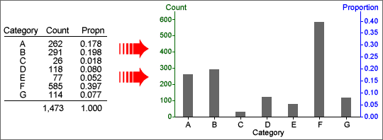

If you don't want to print now,
Numerical and categorical data
In a data set, a numerical variable contains a number from each individual. A categorical variable classifies each individual into one of several groups.
Frequency tables
For a categorical variable, the frequencies for the distinct categories are the number of times each category occurs in the data set. The frequencies fully capture all information about the distribution of values and are usually presented in a frequency table.
Proportions
The proportions of values in the categories (their relative frequencies) are the frequencies divided by the total number of values.
Percentages
Percentages are simply proportions multiplied by 100. It is usually easier to quickly compare a column of percentages than the corresponding column of proportions.

Tables from spreadsheets
Never publish tables in which all values are boxed (the default format for tables produced by many spreadsheets). Consider using a bold typeface for headings or using extra white space to separate rows and columns as an alternative to lines.
| Reason | No. | % |
| Needle/Surg. Injuries | 279 | 0.2 |
| Rape | 1502 | 0.8 |
| TB | 1564 | 0.9 |
| STI | 2745 | 1.5 |
| Med Exam | 4717 | 2.6 |
| Clinical Suspicion | 15387 | 8.5 |
| PMTCT | 45590 | 25.0 |
| VCT | 102443 | 56.3 |
| Other | 7825 | 4.3 |
The table below presents the data more effectively.
| Reason | No. | % |
| Needle/Surg. Injuries | 279 | .2 |
| Rape | 1,502 | .8 |
| TB | 1,564 | .9 |
| STI | 2,745 | 1.5 |
| Med Exam | 4,717 | 2.6 |
| Clinical Suspicion | 15,387 | 8.5 |
| PMTCT (pregnancy) | 45,590 | 25.0 |
| VCT (voluntary) | 102,443 | 56.3 |
| Other | 7,825 | 4.3 |
Large tables
In large tables, it can be difficult to read across rows. To help the eye to match values on the same line, hairlines can be drawn between occasional rows, or some rows can be printed on a very light grey background.
Signal and noise
The useful information in a graphical or tabular display of data is called its signal. Parts of the display that do not contain information that can be usefully interpreted are called noise. We can distinguish:
Noise make it harder to detect the signal in a display and should be avoided.
Significant digits
Many tables contain values that are reported with more significant digits than necessary. Usually the pattern of values in a table can be understood from only their first 2 or 3 digits — the remaining digits are data noise.
| June 2006 | June 2005 | June 2004 | |||
|---|---|---|---|---|---|
| Total | % variation from prev year | Total | % variation from prev year | Total | |
| Cars | 2,232,915 | 2.00 | 2,189,187 | 3.35 | 2,118,240 |
| Rental cars | 21,754 | -3.76 | 22,604 | 2.15 | 22,128 |
| Taxis | 8,011 | -1.97 | 8,172 | 1.03 | 8,089 |
| Trucks | 408,757 | 2.23 | 399,843 | 3.51 | 386,295 |
| Buses/coaches | 16,486 | 5.20 | 15,671 | 4.95 | 14,932 |
| Trailers/caravans | 420,289 | 2.76 | 408,982 | 2.99 | 397,113 |
| Motorcycles | 43,513 | 15.37 | 37,717 | 8.16 | 34,873 |
| Mopeds | 14,171 | 37.82 | 10,282 | 19.32 | 8,617 |
| Tractors | 27,124 | 2.27 | 26,521 | 4.91 | 25,279 |
| Exempt vehicles | 11,130 | 7.77 | 10,328 | 6.39 | 9,708 |
| Miscellaneous | 22,464 | 7.25 | 20,946 | 9.06 | 19,206 |
| Total | 3,226,614 | 2.42 | 3,150,253 | 3.47 | 3,044,480 |
Reducing the number of significant digits and rearranging the columns makes the information easier to understand.
| Number in June (thousand) | Percentage change | |||||
|---|---|---|---|---|---|---|
| 2006 | 2005 | 2004 | 2005-6 | 2004-5 | ||
| Cars | 2,233 | 2,189 | 2,118 | 2.0 | 3.4 | |
| Rental cars | 22 | 23 | 22 | -3.8 | 2.2 | |
| Taxis | 8 | 8 | 8 | -2.0 | 1.0 | |
| Trucks | 409 | 400 | 386 | 2.2 | 3.5 | |
| Buses/coaches | 17 | 16 | 15 | 5.2 | 5.0 | |
| Trailers/caravans | 420 | 409 | 397 | 2.8 | 3.0 | |
| Motorcycles | 44 | 38 | 35 | 15.4 | 8.2 | |
| Mopeds | 14 | 10 | 9 | 37.8 | 19.3 | |
| Tractors | 27 | 27 | 25 | 2.3 | 4.9 | |
| Exempt vehicles | 11 | 10 | 10 | 7.8 | 6.4 | |
| Miscellaneous | 22 | 21 | 19 | 7.3 | 9.1 | |
| All licensed vehicles | 3,227 | 3,150 | 3,044 | 2.4 | 3.5 | |
Necessary property of a frequency table
A frequency table distributes each of a collection of 'individuals' into one of several categories. Each individual must therefore contribute 1 to exactly one of the counts in the table.
Make sure that you can recognise whether a table of counts or percentages is a frequency table.
Modifying a frequency table
Sometimes a frequency table can be modified to make the information clearer or to highlight particular aspects.
Alphabetic ordering of the categories is rarely best.
Bar charts
The main graphical display of categorical data is a bar chart. In a bar chart, the height of each bar is equal to the frequency (or equivalently relative frequency) of that category.

Ordering categories
If the categories have a natural ordering (an ordinal categorical variable), this ordering should be used in a bar chart.
For nominal categorical variables (no natural ordering), alphabetic ordering of the categories should be avoided. It is better to sort them in order of decreasing frequencies, giving a Pareto diagram.
Detecting 'important' categories
Pareto diagrams are particularly useful in industrial quality control and quality improvement where information is collected about the causes of problems in manufacturing processes. The Pareto principle states that:
A large percentage of instances of any problem result from a small percentage of the possible causes.
The leftmost categories in a Pareto diagram are most important. A line is usually added showing the cumulative proportions for the different causes. For the i'th category, the height of the line gives the proportion of problems from any of the i most common categories.

Chartjunk
Bar charts can be very simple and need not take up much space in reports. Avoid the temptation to embellish them 'artistically' to make them more visually appealing. These additions are collectively called chartjunk.
Chartjunk adds 'noise' to a bar chart and makes it harder to read the real information that is contains. Rather than adding chartjunk, draw it small or replace it with a frequency table.
A common form of chartjunk arises when each bar is drawn as a 3-dimensional object. When the resulting 3-dimensional picture is rotated, it often becomes harder to compare the heights of bars and to read off values from the axes. In particular, perspective views should be avoided.
Replacing bars with objects
A more serious problem arises when the rectangular bars in a barchart are replaced with pictures of objects. This often visually mis-represents the proportions in the different categories — the visual importance of a bar is determined by its area or volume, not its height.

Other displays of categorical data
A stacked bar chart is simply a bar chart whose bars are stacked on top of each other. Stacked bar charts are often used to compare two or more groups of individuals.
A pie chart, splits a circle into segments according to the proportions in the categories. The angle for a category is given by its proportion.

In all three displays, the area of ink for any category equals the proportion of values in that category.
Bar charts and pie charts highlight different aspects of the data
Although a bar chart and a pie chart are visual representations of the same values (the proportions in the categories), they highlight different features of these proportions.
Bar charts provide better comparisons of the individual proportions, whereas pie charts allow us to assess the proportions in two or more adjacent categories. The latter is particularly useful if the categories are ordered or split into meaningful groups.

Chartjunk
Resist the temptation to 'enhance' pie charts with chartjunk. In particular, 3-dimensional pie charts can over-emphasise the categories closest to the viewer.

In general, it is better to draw a standard pie chart smaller rather than embellishing it with chartjunk.
Bar charts for quantities
Bar charts are most often used to show frequencies for discrete or categorical data but they can be used to display any quantity data. (Quantity data are 'amounts' of something and are always positive. They are also called ratio variables.)

Pie charts for quantities
Pie charts can also be used to display quantity data, but there is an additional requirement that must be satisfied before a pie chart is used. The total of all the data that are displayed must itself be meaningful.
In the published pie chart below, the individual values are death rates per 100,000 live births, so their total is meaningless. A pie chart therefore should not have been used.